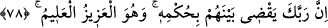
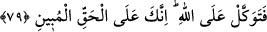

dolayıdır.
78. Rabbin şüphesiz, onlar arasında hükmünü verecektir. O, mutlak galiptir, her
şeyi bilendir.
“Rabbin şüphesiz, onlar” ihtilâfa düşen İsrâiloğulları “arasında” hak ve adâlet üzere
“hükmünü verecektir.” Bu ise kıyâmet günü olacaktır.
Hükmedilen şeye “hüküm” denilmesi mecâz yoluyladır.
“O, mutlak galiptir,” Azîz’dir; hükmü ve kazası reddolunmaz, geri çevrilemez “her
şeyi bilendir.” Alîm’dir; her şeyi bilir. Bu konuda vereceği hüküm de buna dâhildir.
79. O halde sen Allah’a güvenip dayan. Çünkü sen apaçık hakikat üzeresin.
İşte Allah, yukarıda sayılan yüce işlerle/sıfatlarla mevsûf olunca “O halde sen
Allah’a güvenip dayan.” tevekkül et ve onların düşmanlıklarına aldırma.
Tevekkül, bütün varlığı ile Allah’a yönelip güvenmek (tebettül), işini ona
ısmarlamak/havâle etmek ve O’nun dışındakileri (mâsivâyı) sebep görmekten yüz
çevirmektir. Yine tevekkül, ürkütücü/korkutucu bir şey zuhûr ettiğinde kalbin Allah ile
sükûna/huzûra ermesi ve âzâların mutmain olmasıdır.
Allah, tevekkülü ilk olarak şuna bağladı: “Çünkü sen apaçık hakikat üzeresin.” Yâni
senin yolun doğru, işin düzgündür. Hak sâhibi, Allah’ın korumasına ve yardımına
güvenmeyi hak eder, buna lâyıktır.
80. Bil ki sen ölülere işittiremezsin, arkalarını dönüp giderlerken sağırlara da
dâveti duyuramazsın.
Allah, tevekkülü ikinci olarak şuna bağladı: “Bil ki sen ölülere işittiremezsin,”
Çünkü onların ölüler gibi olmaları, onların taraftar ve destek/yardımcı olmalarından
tamamen ümit kesmeyi gerektirir ve yardım talebini Allah Teâlâ’ya tahsis etmeye
çağırır. İşte Allah’a tevekkül ile kasdedilen budur.
Âyette ‘işittirme’nin mutlak olarak ifâde edilmesi, onların işitilen şeylerden hiçbirini
işitmediklerini açıklamak içindir. Ölülere benzetilmeleri, ancak kendilerine okunan